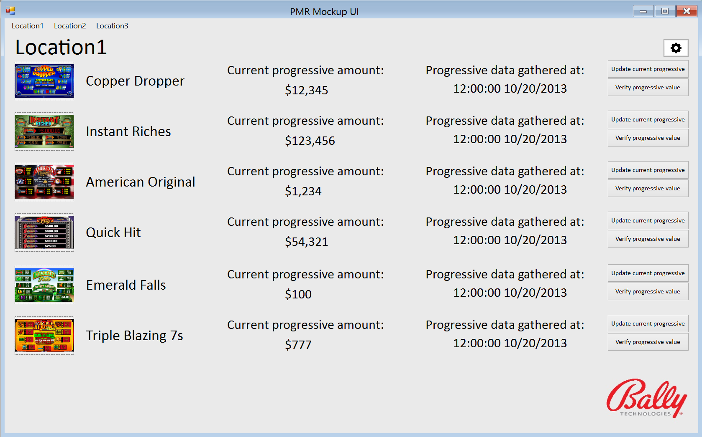

Overview
Currently, casino technicians must periodically check each machine individually to track the progressive meter of every game. These statistics are kept on record so that these technicians can monitor large jackpots and recover from potential power outages or other system failures. Automating this task not only allows for a significantly more up-to-date record of progressive jackpots, but also enables the technician to perform more meaningful data analysis.
The PMR will be comprised of three components: a client application, a server application, and a user interface. The client application is most closely tied to the hardware in the field, and will be responsible for gathering live video feed directly from a progressive meter with current jackpot values. Numeric recognition is performed on a still snapshot of this video feed. The server application will then receive this image of the progressive meter and follow the numeric recognition algorithm within the region of interest. The client and server backend information is then sent to the user interface where the data is organized for the technicians’ use. Games will be listed along with their most recent meter value, and options will be available for the user to update the value of the meter for any game or to correct mistakes the algorithm may have made. Meter history information and other analytical tools will further allow the user to gain a greater understanding of the incoming data.
The Interface
Figure 1: The PMR UI main page
The user interface client will resemble the mockup shown in figure 1. This primary screen gives the user a broad view of several machines' pertinent values, as well as their approximate location within the casino. Options are available for the user to get current progressive meter values and see a more complete detailing of any given machine.

Figure 2: The PMR verification screen
A larger, up-to-date sample of the given game's progressive meter is shown on the verification page. The user will have the option to modify the region of numerical recognition, while also being able to aid in the machine learning process through manual output corrections.
The Algorithm
Figure 3: A game's progressive meter
Input as depicted in figure 3 will be sent from the slot machine client to the server application for optical character recognition. This image will be thresholded and standardized to ensure the algorithm's best performance.
Figure 4: Meter area of interest
The coordinates of the region of interest will be provided by the user to yield nothing but the relevant number as in figure 4. Each digit (contour) found within this image is individually recognized using its moment as compared to each digit's validation set. The digit with the closest match is then returned to build the meter's value. This generated value is finally sent to the user interface for the technician's use.
Team 16 Members:
Steven Albers
stevenalbers@gmail.com
Andrey Gaganov
dayvenkirq@hotmail.com
Nick Little
nickalittle@gmail.com
Course Instructor:
Dr. Sergiu Dascalu, University of Nevada, Reno
dascalus@cse.unr.edu
External Advisors:
Mr. Dat Ta, Bally Technologies
dta@ballytech.com
Dr. George Bebis, University of Nevada, Reno
bebis@cse.unr.edu
Problem-domain book:
R. O. Duda, P. E. Hart, and D. G. Stork, Pattern Classification, 2nd edition, Wiley-Interscience.